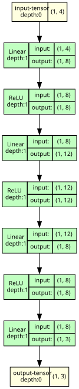
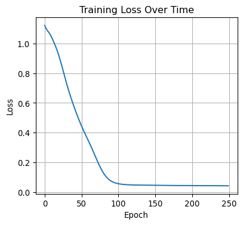
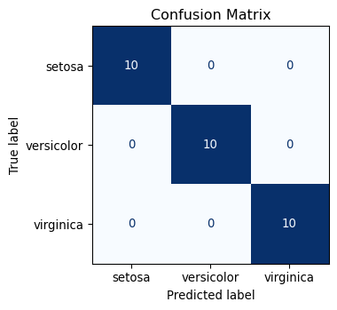

# First, let's import PyTorch
import torch
print(f"PyTorch version: {torch.__version__}")
print(f"GPU available: {torch.cuda.is_available()}")PyTorch version: 2.5.1
GPU available: FalseIn the previous section, we saw that we could use a decision tree classifier to predict the species of a penguin from its beak measurements. This is sometimes called symbolic AI because the computer follows explicit rules that humans can read and understand.
A neural network takes a different approach. Like a decision tree, a neural network learns which rules to apply to the features from the training data. However, unlike a decision tree, it also learns which inputs or combinations of inputs to apply these rules to - effectively, it learns its own features.
Maybe just say this out loud: This can be very powerful - e.g. vision or language models can learn to pick out important features in the data that are hard to encode otherwise, like semantic meaning (“my dog bit his lead” vs “there is lead in the water supply”) in text or texture/shape of objects in images, but generally require more training data and computational power than simpler models. Generally decision trees are good enough for tabular data, because your table’s columns are already meaningful features.
Both can solve the same problem, but they “think” differently!
| Decision Tree | Neural Network | |
|---|---|---|
| Features | You provide them (beak length, flipper size) | It learns its own internal features |
| Rules | Explicit and readable (“if beak > 18mm…”) | Hidden in millions of numbers |
| Interpretability | You can explain every decision | Often a “black box” |
Ideally add a picture of a decision tree and a picture of a neural network, showing the splits in the decision tree vs the mixing-up of inputs in the neural network
At its core, a neural network is just a mathematical function.
It takes some inputs (numbers representing your data) and produces some outputs (numbers representing predictions).
Make a diagram showing this Input -> [Neural Network] -> Output
The function is made up of layers of simple computational units (loosely inspired by biological neurons). Each unit: 1. Takes inputs from the previous layer 2. Multiplies them by weights (importance factors) 3. Adds a bias (a nudge in one direction) 4. Applies an activation function (adds non-linearity)
Maybe don’t need to mention weights and biases explicitly
The “learning” happens when we adjust those weights and biases so the network’s outputs get closer to the correct answers.
The neural network is made up of several of these neurons each of which are connected to all the others in the neighbouring layers (hence, neural network).
Diagram of a network of neurons
When building AI applications, you have three options:
Write all the maths yourself-matrix multiplications, gradient calculations, weight updates. Educational, but tedious and error-prone.
Use tools like PyTorch or TensorFlow that handle the complex maths while giving you control over the architecture. This is what we’ll do today.
Download a model someone else trained (like GPT, ResNet, or BERT) and use it directly or fine-tune it for your task. Great when you don’t have much data or compute or when models to solve your problem already exist.
We’ll use PyTorch because it’s: - Intuitive and “Pythonic” - The most popular framework in research - Excellent for learning how neural networks actually work
PyTorch is a framework that handles the heavy lifting of neural networks:
| Component | What PyTorch Does |
|---|---|
| Weights & Biases | Stores them as “tensors” (fancy arrays) that can run on GPUs |
| Forward Pass | Computes outputs from inputs |
| Backward Pass | Automatically calculates gradients for learning |
| Optimisers | Updates weights to improve the model |
# First, let's import PyTorch
import torch
print(f"PyTorch version: {torch.__version__}")
print(f"GPU available: {torch.cuda.is_available()}")PyTorch version: 2.5.1
GPU available: FalsePyTorch version: 2.10.0+cu128
GPU available: TrueIn PyTorch, we define a neural network as a Python class. Here’s a simple one with: - An input layer (takes our data) - A hidden layer (where the features and rules get chosen) - An output layer (gives us predictions)
from torch import nn
from torchview import draw_graph
class SimpleClassifier(nn.Module):
"""
A simple multi-class classifier
"""
def __init__(self, input_size, hidden_sizes, num_classes):
super().__init__()
# The layers with weights and biases
self.layer_sizes = [input_size, *hidden_sizes, num_classes]
self.layers = nn.ModuleList(
[nn.Linear(i, o) for (i, o) in zip(self.layer_sizes[:-1], self.layer_sizes[1:])]
)
# Activation function (adds non-linearity)
self.relu = nn.ReLU()
def forward(self, x):
"""This defines how data flows through the network"""
# We have layer -> activation -> layer -> activation -> ...
# up until the last layer of the network, for which there is
# no activation
for layer in self.layers[:-1]:
x = layer(x)
x = self.relu(x)
return self.layers[-1](x)
# Create an instance: 4 inputs, 8 hidden neurons, 3 output classes
model = SimpleClassifier(
input_size=4,
hidden_sizes=[8, 12, 8],
num_classes=3,
)
model_graph = draw_graph(model, input_size=(1, 4)) # (batch_size, input_size)
model_graph.visual_graph
import matplotlib.pyplot as plt
import matplotlib.patches as mpatches
import numpy as np
def plot_model_architecture(model):
layer_sizes = model.layer_sizes
n_layers = len(layer_sizes)
max_neurons = max(layer_sizes)
colors = ["#4C9BE8", "#4CAF50", "#E57373", "#9575CD", "#FFB300"]
layer_names = ["Input"] + [f"Hidden {i}" for i in range(1, n_layers - 1)] + ["Output"]
# Fix figure size to keep aspect ratio balanced
fig_width = n_layers * 2
fig_height = max_neurons * 0.8
fig, ax = plt.subplots(figsize=(fig_width, fig_height))
# Use equal numeric spacing
x_spacing = 3
y_spacing = 1
ax.set_xlim(-1, (n_layers - 1) * x_spacing + 1)
ax.set_ylim(-1, (max_neurons - 1) * y_spacing + 1)
ax.set_aspect("equal") # <-- key fix for round circles
ax.axis("off")
neuron_positions = []
for layer_idx, n_neurons in enumerate(layer_sizes):
color = colors[layer_idx % len(colors)]
x = layer_idx * x_spacing
# Center neurons vertically
total_height = (n_neurons - 1) * y_spacing
y_start = (max_neurons - 1) / 2 - total_height / 2
ys = [y_start + i * y_spacing for i in range(n_neurons)]
neuron_positions.append((x, ys))
for y in ys:
circle = plt.Circle((x, y), 0.3, color=color, zorder=3,
ec="white", linewidth=2)
ax.add_patch(circle)
# Draw connections — slightly thicker edges
for i in range(len(neuron_positions) - 1):
x1, ys1 = neuron_positions[i]
x2, ys2 = neuron_positions[i + 1]
for y1 in ys1:
for y2 in ys2:
ax.plot([x1, x2], [y1, y2], color="gray", alpha=0.3, lw=1.2, zorder=1)
# Labels below each layer
for layer_idx, name in enumerate(layer_names):
x = layer_idx * x_spacing
ax.text(x, -0.8, name, ha="center", va="top", fontsize=11, fontweight="bold")
# Legend
legend_labels = [f"{name} ({n} neurons)" for name, n in zip(layer_names, layer_sizes)]
patches = [mpatches.Patch(color=colors[i % len(colors)], label=legend_labels[i])
for i in range(n_layers)]
ax.legend(handles=patches, loc="upper right", fontsize=9)
plt.title("Neural Network Architecture", fontsize=14, fontweight="bold", pad=20)
plt.tight_layout()
plt.show()
plot_model_architecture(model)
The network has randomly initialised weights and biases. These are the numbers that will be adjusted during training.
# Let's look at the parameters in layer 1
print("Layer 1 weights shape:", model.layers[0].weight.shape)
print("Layer 1 biases shape:", model.layers[0].bias.shape)
print("\nActual weight values (randomly initialised):")
print(model.layers[0].weight.data)
# Count total parameters
total_params = sum(p.numel() for p in model.parameters())
print(f"\nTotal trainable parameters: {total_params}")Layer 1 weights shape: torch.Size([8, 4])
Layer 1 biases shape: torch.Size([8])
Actual weight values (randomly initialised):
tensor([[-0.1761, -0.4781, 0.2494, 0.0076],
[-0.3093, -0.1353, -0.0208, 0.0499],
[ 0.2633, -0.2752, 0.2808, 0.4525],
[-0.2937, 0.4934, 0.1922, -0.1004],
[-0.3199, -0.4119, 0.2144, -0.1455],
[ 0.3928, -0.2371, 0.2333, 0.3519],
[ 0.1553, 0.1611, 0.4281, -0.1819],
[-0.3938, 0.3249, 0.3571, 0.3637]])
Total trainable parameters: 279Let’s pass some fake data through our network. The output will be meaningless (we haven’t trained it yet!), but this shows how data flows through.
# Create some fake input data: 1 sample with 4 features
fake_input = torch.tensor([[5.1, 3.5, 1.4, 0.2]])
# Pass it through the network
output = model(fake_input)
print("Input shape:", fake_input.shape)
print("Output shape:", output.shape)
print("\nRaw output (logits):", output)
# Convert to probabilities using softmax
probabilities = torch.softmax(output, dim=1)
print("\nAs probabilities:", probabilities)
print(f"\nPredicted class: {probabilities.argmax().item()}")Input shape: torch.Size([1, 4])
Output shape: torch.Size([1, 3])
Raw output (logits): tensor([[ 0.3255, -0.0857, 0.1772]], grad_fn=<AddmmBackward0>)
As probabilities: tensor([[0.3960, 0.2625, 0.3415]], grad_fn=<SoftmaxBackward0>)
Predicted class: 0The prediction above was random because our network hasn’t learned anything yet. Training is where the magic happens!
Now let’s train our network on the classic Iris dataset (150 samples, 4 features, 3 classes).
Think we want to change this to the penguin dataset that Josh/Ben are using as examples in parts 1/2 but I’ve done iris for now because its easier to load
Every training loop follows the same pattern:
loss.backward())optimizer.step())We have already seen the code for the forward pass above - it is what we use to make predictions.
It looks like:
predictions = model(inputs)The loss functions tells us how wrong we are. Since our classification task is a multi-class classification problem, CrossEntropyLoss is a simple and standard choice but many alternatives exist.
To calculate the loss, we need to initialise our loss function object:
criterion = nn.CrossEntropyLoss()and use it in the training loop:
loss = criterion(predictions, true_labels)The backward pass is where the “magic” of the neural network happens.
As you might have noticed above, neural networks have a LOT of parameters. How can we possibly train this? You might be familiar with optimisation algorithms like the simplex method or Newton-Raphson: these work well in theory but become extremely slow when optimising more than a handful of parameters. Neural networks overcome this using backpropagation, which is essentially an efficient application of the chain rule from calculus. Because every operation in the network (including non-linear activations like ReLU) has an easily computed derivative, we can calculate how the loss changes with respect to every parameter in the network. This tells us exactly how to adjust each weight and bias to reduce the loss.
Once we have the gradients from backpropagation, we need to actually update the weights. This is done by an optimizer. The simplest approach is gradient descent: move each parameter a small step in the direction that reduces the loss.
optimizer = torch.optim.Adam(model.parameters(), lr=0.01)The learning rate lr controls how big the step is - too small and training takes forever; too big and you might overshoot the minimum.
In the training loop we call:
optimizer.zero_grad() # Clear gradients from the previous step
loss.backward() # Compute new gradients
optimizer.step() # Update weights using those gradientsPyTorch provides many optimizers beyond basic gradient descent. Adam (used above) is a popular choice that adapts the learning rate for each parameter, often converging faster than vanilla gradient descent.
# Load the Iris dataset from sklearn
from sklearn.datasets import load_iris
from sklearn.model_selection import train_test_split
from sklearn.metrics import confusion_matrix, ConfusionMatrixDisplay
import matplotlib.pyplot as plt
from torchview import draw_graph
# Load the data
iris = load_iris()
X, y = iris.data, iris.target
# Split into training and test sets
X_train, X_test, y_train, y_test = train_test_split(
X, y, test_size=0.2, random_state=42, stratify=y
)
# Convert to PyTorch tensors
X_train_t = torch.tensor(X_train, dtype=torch.float32)
X_test_t = torch.tensor(X_test, dtype=torch.float32)
y_train_t = torch.tensor(y_train, dtype=torch.long)
y_test_t = torch.tensor(y_test, dtype=torch.long)
print(f"Training samples: {len(X_train_t)}, Test samples: {len(X_test_t)}")
print(f"Features: {X_train_t.shape[1]}, Classes: {len(iris.target_names)}")
# Define loss function and optimizer
criterion = nn.CrossEntropyLoss() # For multi-class classification
optimizer = torch.optim.Adam(model.parameters(), lr=0.005)
# Training loop
num_epochs = 250
losses = []
print("\nTraining...")
for epoch in range(num_epochs):
# Forward pass: compute predictions
outputs = model(X_train_t)
# Compute loss
loss = criterion(outputs, y_train_t)
losses.append(loss.item())
# Backward pass: compute gradients
optimizer.zero_grad() # Clear previous gradients
loss.backward() # Compute gradients via backpropagation
# Update weights using the optimizer
optimizer.step()
# Print progress every 20 epochs
if (epoch + 1) % 20 == 0:
print(f"Epoch [{epoch + 1}/{num_epochs}], Loss: {loss.item():.4f}")
model_graph = draw_graph(model, input_size=(1, 4)) # (batch_size, input_size)
model_graph.visual_graphTraining samples: 120, Test samples: 30
Features: 4, Classes: 3
Training...
Epoch [20/250], Loss: 0.9214
Epoch [40/250], Loss: 0.5853
Epoch [60/250], Loss: 0.3479
Epoch [80/250], Loss: 0.1335
Epoch [100/250], Loss: 0.0572
Epoch [120/250], Loss: 0.0477
Epoch [140/250], Loss: 0.0457
Epoch [160/250], Loss: 0.0450
Epoch [180/250], Loss: 0.0440
Epoch [200/250], Loss: 0.0433
Epoch [220/250], Loss: 0.0427
Epoch [240/250], Loss: 0.0424
from torchviz import make_dot
x = torch.randn(1, 4) # dummy input matching input_size=4
y = model(x)
make_dot(y, params=dict(model.named_parameters())).render("model", format="png")'model.png'We have now trained our neural network!
Now that the model has been trained, the weights and biases have changed. Compare the image above to the original, untrained model.
During training, we expect our loss to decrease as the model makes better and better predictions. You might have noticed above that the neural network “sees” the entire dataset multiple times - each of these is known as an “epoch”. We can plot the loss against epoch number to see how the model improves:
# Plot the training loss
plt.figure(figsize=(10, 4))
plt.subplot(1, 2, 1)
plt.plot(losses)
plt.xlabel("Epoch")
plt.ylabel("Loss")
plt.title("Training Loss Over Time")
plt.grid(True)
It is good that our neural network has learned from the training data, but this is no guarantee that it would work on real data.
To check it works we will evaluate it on our holdout testing subset of the data. This is data for which we know the ground truth, but that the model hasn’t been trained on. We will plot a “confusion matrix” that compares the neural network’s predictions to the real labels.
Note that this still isn’t a guarantee that the model will work when given some real data - e.g. the real data might have a different distribution, which is also something you might need to monitor!
# Evaluate on test set
model.eval() # Set model to evaluation mode
with torch.no_grad(): # Disable gradient computation for inference
test_outputs = model(X_test_t)
predictions = test_outputs.argmax(dim=1).numpy()
# Calculate accuracy
accuracy = (predictions == y_test).mean()
print(f"\nTest Accuracy: {accuracy:.2%}")
# Confusion Matrix
plt.subplot(1, 2, 2)
cm = confusion_matrix(y_test, predictions)
disp = ConfusionMatrixDisplay(confusion_matrix=cm, display_labels=iris.target_names)
disp.plot(ax=plt.gca(), cmap="Blues", colorbar=False)
plt.title("Confusion Matrix")
plt.tight_layout()
Test Accuracy: 100.00%
We can see that the model is successful in predicting the correct class most (or all) of the time.
A decision boundary is the region in feature space where the model switches from predicting one class to another. Visualising these boundaries helps us understand:
Since our Iris dataset has 4 features, we can’t visualise all dimensions at once. Instead, we’ll look at different 2D “slices” by plotting pairs of features and showing the decision boundaries for each combination.
plotting.plot_decision_boundaries(
model,
X,
y,
feature_names=iris.feature_names,
class_names=iris.target_names,
)We saw above an example of building and training our own neural network.
It’s also possible to download a neural network with:
The approach you should choose depends on how much prior work there has been in the domain you are applying your neural network to, and how much data you have to train your model.
You can often find models designed specifically for a given task, such as classifying an image, identifying certain features in an image, or converting audio to text (transcribing). These models are often shared through websites like Hugging Face or Kaggle, and they have dedicated software libraries to help you use those models.